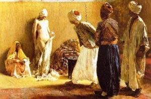
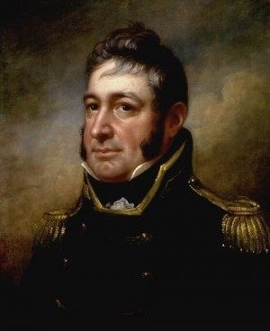

< < < Back
Why The Left Doesn’t Want You To Know About The Tripolitan Pirate Wars – Return Of Kings
The great historian George Santayana is often quoted as saying,
Progress, far from consisting in change, depends on retentiveness. When change is absolute there remains no being to improve and no direction is set for possible improvement: and when experience is not retained, as among savages, infancy is perpetual. Those who cannot remember the past are condemned to repeat it.
One of the greatest weapons in the arsenal of the social justice warriors is the revision of history. This is nothing new: every totalitarian or tyrannical regime has used the revision of history as a means to control its population. Like the confiscation of arms, tyranny is always preceded by a rewriting of history.
While the revision of history is a terrible intellectual crime, alongside is the omission of history. The simple act of omitting certain historical events that contradict the politically acceptable narrative: white Christian heterosexual men are the only villains in the world.
The events this article will explore a significant part of history that is often left out of history texts. It is given token treatment in the name of “tolerance.” Its heroes are white, Christian, heterosexual men. The villains are non-white, non-European Muslims of the Barbary Coast.
The Arab Slave Trade
Whenever a SJW brings up slavery, it is always about white people bringing slaves to the New World for work on plantations. However, a far more ghastly slave trade existed almost a thousand years before molasses was traded for black people: the Arab Slave Trade.
Starting in 650 (before the Crusades) and lasting until 1960, approximately 18 million people were enslaved from various Arab states, from the Barbary Pirate States to Turkey itself. Between 1500 and 1850, 1.25 million white Europeans were enslaved by Arab slave traders.

After being captured, these Europeans were typically given two choices: remain Christian and be a slave, or convert to Islam, as it was against Islamic law for a Muslim to enslave another Muslim.
Enter The United States
In the years immediately after the American Revolution, American merchantmen were no longer under the protection of the most powerful navy in the world: the British Royal Navy. Trade was vital to the fledgling young nation, and her merchantmen traveled the Mediterranean to deliver and purchase goods to support the new economy.
Being located in North Africa, the Barbary Pirate states were uniquely situated to take advantage of vulnerable American shipping. A large portion of the northern coast of Africa was under their control (and ostensibly, that of the Ottoman Empire). They captured American merchantmen, stole the cargo and enslaved the crews. The only way to secure release of American sailors was to pay ransom, which was insanely high: at times, $600,000 for a crew of 50, when the entire annual budget of the United States in 1803 was $8.2 million.
At the time, Great Britain was still putting down the first social justice warrior “revolution”: the French Revolution. It was an all-out murder-fest of anyone who was not ideologically in line with the Third Estate. Conflict with Napoleon meant the Royal Navy and British Army were unable to deal with the threat, so the British Empire regretfully paid “protection money” to the Barbary Pirate states. However, England would redeem itself a year after Waterloo in 1816 when the Royal Navy bombarded Algiers to free over a thousand white, Christian slaves.
The French Revolutionaries executed anyone who wasn’t in line with their quasi-socialist agenda. Don’t think for a moment that SJWs or feminists wouldn’t do the same today.
There is no god but Gold, and Muhammad is his prophet
Thomas Jefferson and John Adams were well aware of the threat posed by the Barbary Pirate states. In 1786, Adams, ambassador to Great Britain, and Jefferson, ambassador to France, met with the Tripolitan envoy, Sidi Haji Abdrahaman. They hoped to negotiate the release of several dozen Americans being held as slaves.
Abdrahaman told Jefferson and Adams “all nations which have not acknowledged the Prophet are sinners, whom it is the right and duty of the faithful to plunder and enslave.”
SJW axiom: “Islam is a religion of peace.”
A Paper Tiger
When Thomas Jefferson took office as our third President in 1801, the United States was unprepared to defend its national interest. Both Republicans and Federalists were wary of a strong military, and the United States had yet to take its role as world police (the British Empire still held that unofficial distinction).

Thomas Jefferson supported building a strong U.S. Navy
For the first 30 years of her existence, the United States paid tribute to Tripoli, Algiers and Tunis. This is comparable to “foreign aid” paid to questionable Middle Eastern countries. These efforts were not always successful: the Barbary leaders always wanted more, and demanded princely six-figure sums when the entire Federal budget was still seven-figures.
Thomas Jefferson was determined to end the humiliation of the United States and the paying of tribute to Islamic masters. However at the moment, the United States barely had a Navy and possessed no ability to project its power overseas.
At this point in history, the United States truly was a paper tiger: although it had successfully outlasted a war with the most powerful Empire in history, it was still incapable of protecting itself. The United States was “beta” to the Tripolean pirates “alpha”: the U.S. had no choice but to concede to Barbary demands.
The Humiliation Of The U.S.S. George Washington
In 1800, the U.S.S. George Washington, under the command of Captain William Bainbridge departed to deliver tribute to the Dey of Algiers. It was a humiliating mission for a Captain in the United States Navy. The already bad situation turned into disaster: The Dey of Algiers broke all protocols of diplomatic recourse and held Captain Bainbridge and his crew hostage unless they would agree to ferry plunder for the Dey to Constantinople.
With little choice and the George Washington in the sights of Tripolean shore batteries, Captain Bainbridge conceded and carried out the mission on behalf of the Dey. Angrily, he wrote a letter to the President telling of the savage insult to the United States. Note: Captain Bainbridge wasn’t even sure who was president, as he had been at sea during the election of 1800.

Captain William Bainbridge would serve in both Barbary Pirate Wars.
Millions For Defense, But Not One Cent For Tribute!
The incident involving the U.S.S. George Washington, coupled with other crimes against the United States and Tripoli’s official declaration of war in May 1801, gave Jefferson the support he needed to build the U.S. Navy. To protect American interest and free Christian slaves, Jefferson needed a force to be reckoned with.
The United States built six frigates to protect American shipping and endorsed a plan by William Eaton to attack Tripoli. Eaton would have eight U.S. Marines under the command of Lieutenant Presley O’Bannon and a few hundred local mercenaries under the command of Hamet Karamanli.
William Eaton was appointed “General and Commander in Chief” for the fight against Tripoli.
…To the shores of Tripoli!
On April 27th, 1805, after a harrowing march through the desert, General William Eaton attacked the Tripolitan city of Derne off the North African coast. Using military tactics he learned as a Sergeant during the American Revolution, he split his force in two: Hamet and the Arab mercenaries would attack on the left where the Governor’s palace was located and fortifications weak. Eaton, along with his Marines and Greek mercenaries, would attack the right. The U.S.S. Nautilus, U.S.S. Hornet and U.S.S. Argus would bombard the port. Commanding the Nautilus was Captain Oliver Hazard Perry, who would later distinguish himself in the War of 1812.
The attack began at about 3pm. While the shore batteries in the harbor were quickly silenced by the U.S. Navy, one of the guns brought ashore by Eaton malfunctioned. Its crew was unable to fire the cannon. Quite suddenly, Eaton’s ground attack on the right had lost its artillery support. Any officer or NCO knows this can lead to disaster. Thinking quickly, Eaton adjusted his game to overcome the odds: a bayonet charge down the hill into the Tripolitan defensive line.
Amid a flash of musket fire and a twirl of bayonets, General Eaton charged the enemy defenses, with the American flag blazing in the hot North African sun. He would later write: “We rushed forward against a host of savages more than ten to our one.”
Eaton was injured in his left wrist, and found five musket ball holes in his tunic. But General Eaton, the U.S. Marines and Hamet’s mercenaries carried the day, smashing through the defensive perimeter to take the city. That evening, Lieutenant Presley O’Bannon raised the American flag over Derne. The nation that had existed for less than 30 years and was incapable of protecting its own people from enslavement now turned the tables on their would-be Muslim masters.
General Eaton and Lieutenant O’Bannon prepared their men for the march to Tripoli. A force to be reckoned with, they were now in position to put the fear of God in the Tripolitan Dey.
Betrayal Of The Lowest Order

American Forces break through the defenses of Derne.
When news reached the Pasha of Tripoli, Yusuf Karamanli (brother of Hamet Karamanli, leader of the mercenaries under General Eaton), he was positively shocked and dreadfully afraid. The man who had once scoffed at America and whose ambassador had declared the absolute superiority of Islam was now prepared to “make peace and give up the American prisoners… without consideration of money…”
However, the efforts of General Eaton, Lieutenant O’Bannon, Hamet and the U.S. Navy would be betrayed. Diplomat (and Consul General) Tobias Lear made a blunder of negotiation that would not be equaled until U.S. President Barack Obama’s negotiations with Iran.
The treaty that Lear negotiated with Pasha Yusuf included payment of $60,000 for the captured Americans as well as returning the city of Derne to Tripolitan control. Had Lear held his nerve, and put his personal interests aside, he could have secured the release of the Americans held as slaves for no payment. And he most likely could have secured the remittance of several hundred thousand dollars of previous tribute payments.
It was a betrayal of the lowest order. Not only had Lear betrayed the efforts of Eaton and the U.S. Navy, but he also made the United States break its word with Hamet: the U.S. had promised to give the throne of Tripoli to him. Hamet and his brother, Pasha Yusuf, had been fighting over the throne for years and Yusuf held Hamet’s family hostage in Tripoli. For the sake of honor, the U.S. would later force the release of Hamet’s wife and children.
This would not be the last time the United States would break its word or make a grave mistake in the Middle East.
Final justice for the Barbary Pirate States would have to wait until after the War of 1812. Commodore Stephen Decatur would lead American forces to defeat the city-state of Algiers on June 18, 1815. On that same day, the Duke of Wellington and Gerhard von Blucher would defeat the French Revolutionaries at the Battle of Waterloo.
Some Inconvenient Truths
The lessons of the Barbary Pirate wars are highly applicable to our current situation in the region, and our culture as Americans overall. The facts about the enslavement of whites and the Barbary pirates are very inconvenient to the social justice warrior narrative of history (which is mostly written by socialist Howard Zinn). The words of Abdrahaman to Jefferson and Adams should be broadcast in a similar vein to the South Park episode “In the Closet” which lampooned Scientology: “This is what Muslims in the region actually believe.”
Politicians like Tobias Lear are trying to force a mass influx of Muslim immigration into Europe and the United States. Just as Lear gave up America’s victory at the Battle of Derne, so too do corrupt politicians wish to give up American interest when we are the remaining world superpower.
America does not need immigrants anymore. This is not the 1800s when we needed settlers to build homesteads out west. Immigrants need the United States, and the only way they should ever be allowed to enter is if they can provide some tangible benefit to America (and more votes for the Democrat Party is not a benefit).
Never forget our heroes of old. Do not let the social justice warriors write them out of history to serve their own political ends. Men such as William Eaton, Presley O’Bannon, and Stephen Decatur fought bravely to rescue white Christians from Muslim enslavement. Do not allow their good names to be sacrificed for the benefit of dishonest politicians and social justice warriors.
If we allow the SJWs to rewrite history, our infancy will be perpetual.
Read More: What The West Can Learn From India’s Checkered History